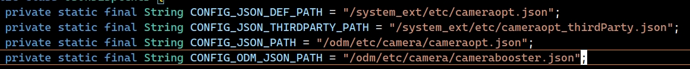

DSAC
DSAC
Backlinks
- 2025-03-17— title: DSAC date: 2025-03-17T21:35:34Z lastmod: 2025-03-17T21:35:37Z
DSAC
Backlinks
异步OIS稳定性问题
异步OIS稳定性问题
异步OIS引起的稳定性问题
03-11 20:44:03.254 1047 15824 15824 F DEBUG : tagged_addr_ctrl: 0000000000000001 (PR_TAGGED_ADDR_ENABLE)
03-11 20:44:03.254 1047 15824 15824 F DEBUG : pac_enabled_keys: 000000000000000f (PR_PAC_APIAKEY, PR_PAC_APIBKEY, PR_PAC_APDAKEY, PR_PAC_APDBKEY)
03-11 20:44:03.254 1047 15824 15824 F DEBUG : signal 11 (SIGSEGV), code 1 (SEGV_MAPERR), fault addr …AE基础知识
AE基础知识
基础概念
帧
- 一帧就是一幅图像
pclk
- 是控制像素输出的时钟，即pixel采样时钟，一个clk采集一个像素点 , 单位MHz。表示是每个单位时间内(每秒)采样的pixel数量。
帧率(fps)
- line_length = pclk * line_time
- fps = pclk / (VTS * HTS) = pclk / (frame_length * line_length) = 1 / (frame_length * line_time)
- fps = 1 / (time_per_line[sec] * (frame_length))
- fps即表示1秒内帧数，此公式中line_time单位是秒
- line_time一组setting只有一个值， 一般是不变的，可看做做常数，调节帧率一般都会通过调整VTS来完成(也就是调整V_Blank，增加帧与帧间隔的时长，自然 …
AE相关基础知识
AE相关基础知识
基础概念
帧
- 一帧就是一幅图像
pclk
- 是控制像素输出的时钟，即pixel采样时钟，一个clk采集一个像素点 , 单位MHz。表示是每个单位时间内(每秒)采样的pixel数量。
帧率(fps)
- line_length = pclk * line_time
- fps = pclk / (VTS * HTS) = pclk / (frame_length * line_length) = 1 / (frame_length * line_time)
- fps = 1 / (time_per_line[sec] * (frame_length))
- fps即表示1秒内帧数，此公式中line_time单位是秒
- line_time一组setting只有一个值， 一般是不变的，可看做做常数，调节帧率一般都会通过调整VTS来完成(也就是调整V_Blank，增加帧与帧间隔的时长， …
Android相机架构概览
Android相机架构概览
安卓相机架构
Android系统将相机架构分层, 各层的接口与实现分开, 使用接口连接各层, Android相机的架构共被分为5层. 如下图, 包括APP, framework, Service, HAL, driver.

Camera APP
Camera APP是最上层, 不同的APP有不同的界面, 负责与用户直接交互. 通过Camera2 API将需求发送到Camera Framework层, 以此控制相机, 再将接收到的结果反馈给用户.
Camera Framework
Camera Framework层封装了Camera2 API的实现细节, 并将接口提供给Camera APP层, 供其调用. 收到APP层的请求后通 …
Camera AutoRecovery适配
Camera AutoRecovery适配
Camera AutoRecovery适配
Cameraopt适配
https://gerrit.pt.mioffice.cn/c/vendor/xiaomi/proprietary/cameraopt/+/4638759 https://gerrit.pt.mioffice.cn/c/vendor/xiaomi/proprietary/cameraopt/+/4675580 AIDL重新生成 自救系统需要依赖TrackerManager, cameraopt release-v-2中没有实现这个feature, 需要适配一下: https://gerrit.pt.mioffice.cn/c/vendor/xiaomi/proprietary/cameraopt/+/4432694
mivifwk …
cameraopt常识
cameraopt常识
cameraopt_release的分支要在SSI中查.
编译出的产物位置:out/target/product/missi/system_ext/framework/miui-cameraopt.jar
cameraopt_release位置:release/miui-cameraopt/libs/miui-cameraopt.jar
手机系统中位置:system_ext/framework/miui-cameraopt.jar
系统中cameraopt.json位置:

优先级从低到高cameraopt log开关
adb root
adb remount
adb shell setprop persist.vendor.cameraopt.loglevel 1
adb shell setprop persist.sys.lmkd.killing.debug …Log开关
Log开关
Log开关
可以用
adb shell stop logd
adb shell start logd
来开关logd, 排除log的影响, 用trace来看性能
关log
adb root adb shell setprop vendor.debug.camera.ulog.mode 0x10 adb shell setprop persist.vendor.mtk.camera.log_level -1 adb shell setprop persist.sys.offlinelog.logcat false adb shell setprop persist.sys.offlinelog.logcatkernel false adb shell setprop persist.vendor.camera.mivi.groupsEnable 0 adb shell …
MTK Camera Memory Structure
MTK Camera Memory Structure
MTK Camera Memory Structure
MTK Camera Memory组成
-
Camera APP：相机APP本身占用的内存空间
-
cameraserver：Google AOSP 原生代码, 同样Android 版本的用量应该差不多，它的內存用量与APP当前的行为强相关。目前观察到cameraserver比较大的用量都是ImageReader建立的buffer, 用来传输给camerahalserver作为最后的图像输出。
-
camerahalserver：MTK 实现的部分，分为non-ion和ion两部分
- Non-ION：CPU 可存取, 没特別要求, 通常会是这一类。此类对系统负担较轻, 因为各种技术成熟(virtual address space，CPU L1/L2/L3 cache，zram …
shot_2_xx
shot_2_xx
以N16U为例，分析其拍照产生的log。
09-03 15:44:34.169 18351 27678 D CAM_SplashProvider: getSplashFile: drawableRes camera_preview_bottom_action_bar_cv
// 打开相机
09-03 15:44:35.021 18351 18351 I CAM_Camera@173324289: [K_PROCESS]: onCreate start 173324289
09-03 15:44:35.022 18351 18351 I CAM_PerformanceManager: [P_PERFORM]: Event: HOT_LAUNCH start
09-03 15:44:35.023 18351 …双摄与闪光灯
双摄与闪光灯
双摄
- 彩色+彩色(RGB+RGB)
- 用于计算景深，实现背景虚化重对焦
- 彩色+黑白(RGB+Mono)
- 提升暗光/夜景影像拍摄质量
- 广角镜头+长焦(Wide+Tele)
- 用于长焦
- 彩色+深度(RGB+Depth)
- 三维重建
基线10mm左右，人类双眼基线均值64mm，基线短，只能计算较近物体的景深(浅景深)
闪光灯
控制方式
- GPIO
- PMIC
- IIC
title: 双摄与闪光灯 date: 2025-03-11T09:46:48Z lastmod: 2025-03-11T09:46:48Z
双摄与闪光灯
双摄
- 彩色+彩色(RGB+RGB)
- 用于计算景深，实现背景虚化重对焦
- 彩色+黑白(RGB+Mono)
- 提升暗光/夜景影像拍摄质量
- 广角镜头+长焦(Wide+Tele)
- 用于长焦
- 彩色+深度(RGB+Depth) …
概念整理
概念整理
AA：自动校准工艺
ABCC(Assisted Bad Cluster Correction)：辅助坏点族校正
ABF(Adaptive Bayer Filter)：自适应拜尔滤波器，Raw域单帧降噪。先经过Bilateral Filter去除噪声和边缘，再软阈值处理，在ISP流程前面，如果力度大会影响图像清晰度，力度较小
Accelerate Meter：重力加速感应器
ACF(Auto Correlation Function)：自相关系数，描述噪声的空间特性
ADC(Analog-Digital Convert)：模数转换
AEC(Automatic Exposure Control)：自动曝光控制
AF：自动对焦，CDAF(Contrast Detection AF)反差对焦、PDAF(Phase Detection AF)相位对焦
AFD(Automatic …
灰阶, 16-235, 0-255
灰阶, 16-235, 0-255
灰阶 16-235和0-255的由来
电视视频的标准色域: BT.709, 这个标准的色彩范围和sRGB的色彩范围一样, 唯一的不同就是灰阶为16-235. 在BT.709的规定中, 亮度分量在8bit深度下, 取值范围是16-235.
电视采用16-235原因:
- a. 模拟信号转为数字信号时, 数字信号在超过电平上限时处理不完善, 不能像模拟信号那样在顶端平缓过度, 为了确保瞬时峰值电平不会超限, 所以留了一小部分空间.
- b. 在黑白电视机和彩色电视机共存时代, 彩色电视机为了兼容黑白电视机, 彩色电视机的彩色信号必须被压缩, 为了截去最不敏感的色彩信息, 色差分量就此而来（YUV: Y是亮度, UV是色度；YPbPr, YCbCr等）. RGB的0-255模式无法运作于黑白电视上, 因为带宽有限, 因此需要改用色差分量来传输, 并压缩至16-235 …